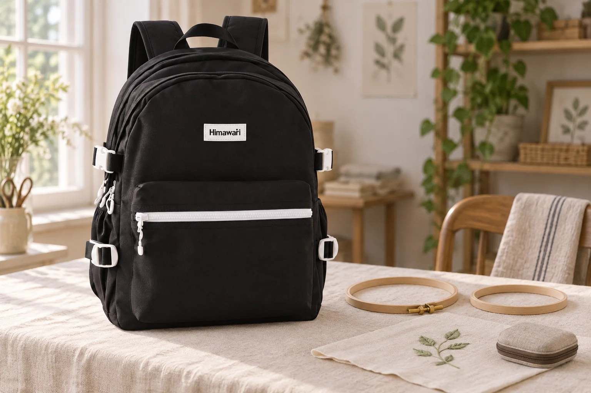

내려놓고 쓰는 백팩, 바닥과 입구를 함께 고르기

백팩을 메고 이동하는 시간보다 작업대 옆에 내려놓는 시간이 긴 날이 있습니다. 사진에서는 반듯하게 서 있던 가방도 실제 짐을 꺼낸 뒤에는 받치는 면이 달라질 수 있습니다. 이런 날 쓸 가방을 고를 때는 바닥의 모양과 입구가 향할 방향을 같이 봅니다. 혼자 서 있는지 한 가지만 보지 않고 물건을 꺼내고 다시 넣을 동안 어떻게 놓을지 생각해봅니다.
먼저 평소 가방을 두는 위치를 살펴봅니다. 작업대 아래인지, 옆 선반인지, 의자 곁의 허용된 바닥인지에 따라 손이 들어갈 높이가 달라집니다. 작업 재료를 펼칠 면과 개인 가방을 둘 면도 나눌 수 있습니다. 백팩을 놓을 공간은 있는데 열 때마다 다른 물건을 밀어야 했다면 본체와 입구를 사용하는 공간을 함께 잡아볼 필요가 있습니다.
바닥 전체가 받쳐지는 자리
가방 밑면의 일부만 선반에 걸치면 물건을 꺼내는 순간 위치가 달라질 수 있습니다. 본체가 놓일 면을 먼저 보고 손을 놓습니다. 모서리에 걸린 어깨끈이나 가방 아래 겹친 다른 짐이 있다면 정리합니다. 가방을 반듯하게 보이게 하는 것보다 실제로 받쳐지는 면이 어디인지 알아야 다음 동작을 판단하기 쉽습니다.
가방이 빈 상태에서 접히는 모양과 도구를 담은 상태의 바닥은 다를 수 있습니다. 실제로 가져갈 케이스와 자료를 넣은 뒤 놓아봅니다. 단단한 물건이 한쪽 끝에만 모였다면 위치를 바꾸어 비교할 수 있습니다. 필요한 짐의 자리를 먼저 정하고 받쳐지는 면을 봅니다. 무엇을 꺼낸 뒤 모양이 달라지는지도 살펴볼 수 있습니다.
Himawari No.9290 제품 정보의 검정 원본은 본체를 세운 정면 모습을 보여 줍니다. 위쪽의 둥근 윤곽과 아래쪽 본체, 앞면의 밝은 지퍼 선을 볼 수 있습니다. 사진이 서 있는 모습이라는 사실만으로 빈 가방이나 도구를 뺀 가방의 자립성이 확인되는 것은 아닙니다. 자신의 구성에서 바닥을 받칠 위치와 사용하는 동안 손으로 받칠 필요를 직접 살펴보아야 합니다.

입구가 나를 향하도록 놓을 수 있는가
가방의 앞면이 잘 보이게 놓는 위치와 손을 넣기 쉬운 위치는 다를 수 있습니다. 작업 의자에 앉아 어느 쪽으로 몸을 돌려 가방을 여는지 봅니다. 자주 쓰는 한 묶음을 꺼내기 위해 가방 전체를 반대쪽으로 돌려야 한다면 놓는 방향을 바꿀 수 있습니다. 방향을 바꾼 뒤에는 끈이 통로나 의자 다리 쪽으로 나오지 않는지 함께 확인합니다.
No.9290의 외부 크기는 가로 30 × 세로 42 × 폭 18cm로 안내되어 있습니다. 선반이나 작업대 옆에 놓일 바깥 규모를 비교할 때 참고할 수 있습니다. 입구를 열고 케이스를 잡을 손의 공간은 별도로 남아 있어야 합니다. 가방을 넣을 자리만 재기보다 앉은 자세에서 필요한 물건을 꺼낼 경로도 함께 보아야 하는 이유입니다.
가방을 바닥에서 책상 위로 계속 올렸다 내렸다 한다면 어떤 물건을 찾을 때 그런지 봅니다. 작은 도구 하나 때문이라면 그 묶음을 작업 시작 전에 꺼내 정한 면에 놓는 방법이 있습니다. 필요한 물건을 전부 펼쳐놓을 필요는 없습니다. 자주 쓰는 묶음과 작업을 마칠 때만 다시 넣을 묶음을 구분하면 가방을 움직이는 횟수를 조정할 수 있습니다.
도구를 꺼낸 뒤 달라지는 빈자리
큰 케이스를 빼면 가방 안에 빈 공간이 생깁니다. 옆에 있던 파일이나 작은 주머니가 그쪽으로 움직이는지 살펴봅니다. 도구를 되담기 전에 원래 자리가 남아 있는지 보면 억지로 밀어 넣는 동작을 줄일 수 있습니다. 가방 안의 빈자리를 작업 중 새 물건을 담는 임시 칸으로 계속 쓰고 있다면 돌아갈 구성도 함께 바뀝니다.
날카로운 도구나 특별한 취급이 필요한 물건은 해당 보관 안내를 따릅니다. 그런 물건의 전용 케이스를 정한 뒤 닫힌 외형으로 백팩과 비교합니다. 케이스 하나를 꺼낸다고 주변 소품이 함께 따라오지 않는지 보고 위치를 고릅니다. 백팩의 바닥이 받쳐져 있다는 사실과 도구가 안전하게 보관되었다는 판단은 각각 필요한 조건입니다.
쓰던 도구를 잠깐 가방 위에 올려두면 입구를 닫을 때 다시 옮겨야 합니다. 작업대에 허용된 도구 자리가 있으면 그 면을 쓰고 가방을 임시 작업대로 다루지 않습니다. 작업 중 오염이나 물기가 생긴 도구는 깨끗한 개인 짐과 나눌 운반 방법을 정합니다. 가방의 겉면과 안감의 관리는 해당 제품의 안내를 기준으로 진행합니다.
다시 들기 전에 바닥과 끈 살피기
작업을 마친 뒤에는 꺼낸 도구를 먼저 보관하고 가방을 닫습니다. 본체를 들기 전에 어깨끈이 의자 밑이나 작업대 다리에 걸려 있지 않은지 봅니다. 바닥에 두었던 면의 물기나 이물질도 눈으로 확인할 수 있습니다. 가방을 바로 들어 올려 옷에 대기보다 놓여 있던 면을 한 번 살피는 순서를 만들면 필요한 관리를 알아보기 쉽습니다.
물건을 모두 넣은 가방과 일부만 담은 가방의 모양이 다르게 느껴지면 어떤 묶음이 빠졌는지 확인합니다. 작업 장소에 남기기로 한 도구가 있다면 그 빈 공간을 그대로 둘지 다른 소지품의 위치를 바꿀지 정합니다. 같은 가방이라도 귀가 때의 구성이 달라진 것입니다. 출발 모습만 복원하려고 다른 물건을 채워 넣지 않아도 됩니다.
후보를 직접 볼 기회에는 가방을 놓을 면과 여는 방향을 바꾸어봅니다. 앞쪽에서만 보았던 가방을 옆자리에서 열어보고 자주 쓸 물건을 꺼내봅니다. 작업대가 좁은 날에는 별도의 작은 도구 가방이 더 편한지 비교할 수도 있습니다. 백팩 하나로 모든 장소를 맞추는 것보다 자신이 자주 머무는 한 자리에서 필요한 동작이 가능한지를 먼저 봅니다.
다음 작업 날의 가방을 준비할 때는 바닥에 놓았던 위치와 계속 움직여야 했던 이유를 짧게 남겨봅니다. 받침 면이 좁았는지, 입구가 반대쪽이었는지, 큰 케이스를 빼면 다른 짐이 이동했는지 구분합니다. 그중 한 가지를 바꾸고 같은 물건으로 다시 사용해볼 수 있습니다. 멘 사진에 더해 내려놓은 뒤의 손동작까지 가방 선택의 자료로 남습니다.